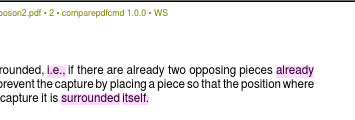

This software is no longer for sale.
C:\> comparepdfcmd.exe
Use comparepdfcmd to compare two PDF files using the command line. In a
console (i.e., in a Command Prompt window opened by running
cmd.exe) enter, e.g., comparepdfcmd.exe -r report.pdf
old.pdf new.pdf. If there are any differences
report.pdf will be output with each pair of pages from
old.pdf and new.pdf shown side-by-side with
differences color highlighted (as with a highlighter pen).
This commercial console (command line) program for Windows is ideal for testing, quality assurance, scripted comparisons, and regression testing. It is fast and cloud-free: comparepdfcmd runs on your own computer without the size or page limits of online tools—some customers compare PDFs with thousands of pages. Customers include publishers, banks, insurers, and Governments.
comparepdfcmd can say whether two PDFs—or two folders of PDFs—are the same or different, and it can optionally output one or more reports that show any differences. The reports can be output in PDF format, or as PNG images, or in CSV format suitable for spreadsheets or regression testing, or JSON or XML format.
Comparisons can be made based purely on the text regardless of margins and word-wrap, or based on appearance (which accounts for fonts, colors, layout, diagrams, images, etc.)
If you require an easy-to-use graphical user interface (GUI) tool, use DiffPDF.
Here is one example use of the program:
C:\Users\me>comparepdfcmd -v -s ^ -r report.pdf ^ oldfile.pdf newfile.pdf Wrote "report.pdf"
Here the two PDFs have some different text (compared word-by-word which
is the default), and because of the -r or --report
option, the differences are shown highlighted in the file
report.pdf. In addition, due to the -s or
--show option, the report.pdf differences report will
be shown in your PDF reader. The message was output because the
-v or --verbose option was used. If they had the same
texts the output on the console would have been Same, no
report would have been produced, and no report would be shown in your
PDF reader.
Note that ^ is the Windows line continuation character; you
don't need it/them if you write the whole command as a single line.
Here is another example use of the program:
C:\Users\me>comparepdfcmd -f pdf ^ -R reportdir -S summary.csv ^ oldpdfdir newpdfdir
This run compares each PDF file in the oldpdfdir directory
with a PDF file in the newpdfdir directory that has the same
name (if there is one). For each pair of PDFs that differ, it produces
the requested report in the reportdir with the same name as the
original files, and with the differences highlighted. In addition it
produces a summary of the differences in the file summary.csv.
Here is an example use with a custom configuration file:
C:\Users\me>comparepdfcmd -C myconfig.ini ^ -r diff.csv file1.pdf file2.pdf
This run reads the configuration from myconfig.ini and outputs
a CSV difference report if file1.pdf is different from
file2.pdf. The configuration file need only contain those
options which you want to set to non-default values. Every configuration
file option is explained in the manual.
For a summary of all the command line options run either of these commands:
C:\Users\me>comparepdfcmd -h C:\Users\me>comparepdfcmd --help
At the end this also shows which license is in use, what its expiry is, and where it is located.
All the command line options and configuration file options are listed and explained in the manual: comparepdfcmd2.pdf (~218 KB). This can also be viewed using the program using either of these commands:
C:\Users\me>comparepdfcmd -m C:\Users\me>comparepdfcmd --manual
Here is an extract of a screenshot of a PDF report:

Red change bars in the left margin indicate where changes are, and changes are highlighted by coloring them as if with a highlighter pen.
Your Privacy • Copyright © 2006 Mark Summerfield. All Rights Reserved.